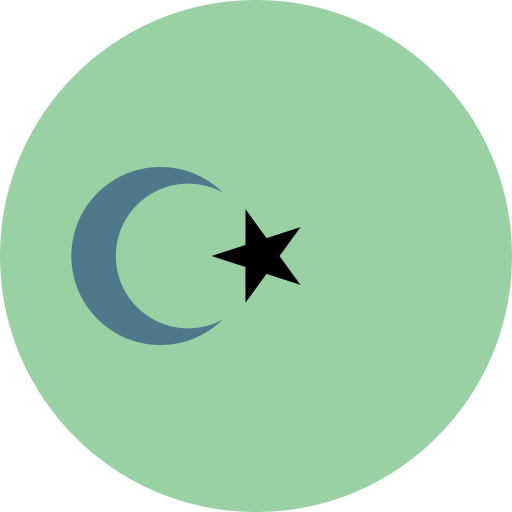
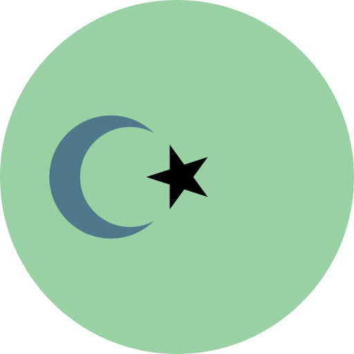

Welcome Note
Selamat datang di web page Interaktif Statistik PPI Turki #Bersinergi 2017. Web page ini dipersembahkan karena maraknya pertanyaan calon mahasiswa baru yang akan kuliah di Turki (khusunya) dan khalayak ramai (umumnya) tentang statistik jumlah pelajar Indonesia di Turki. Mulai dari pertanyaan tentang program studi apa yang paling banyak dipilih oleh pelajar Indonesia di Turki sampai pertanyaan mengenai populasi mahasiswa Indonesia di tiap universitas di Turki. Interaktif Statistik PPI Turki #Bersinergi 2017 kedepannya di harapkan mampu membantu pelajar Indonesia yang ingin melanjutkan studinya pada universitas di Turki.
Rincian fitur Interaktif Statistik PPI Turki #Bersinergi 2017 v 1.0 :
- Pengguna dapat melihat statistik jumlah keseluruhan pelajar di Turki
- Pengguna dapat melihat statistik jumlah pelajar tiap provinsi di Turki
- Pengguna dapat melihat statistik jumlah ratio pelajar di suatu provinsi menurut rumpun program studi
- Pengguna dapat melihat universitas dan program studi dengan pelajar terbanyak di tiap provinsi di Turki
- Pengguna dapat melihat ratio antara pelajar perempuan dan laki-laki
Future implementations :
- Ratio mahasiswa menurut jalur pendidikan yang ditempuh (beasiswa)
- Search engine untuk mencari jumlah data menurut jurusan/universitas/kota
Interaktif Statistik PPI Turki #Bersinergi 2017 dibangun menggunakan teknologi d3.js untuk visualisasinya dan Python's Jupyter-Notebook untuk membersihkan serta mengkurasi data. Sumber data, datbase PPI Turki 2016 dan scraping data melalui internet. Icon diunduh dari FlatIcon. Hosted in Github. Untuk memulai silahkan mengklik tombol close, selamat bereksplorasi!
 

Turki (Keseluruhan)
- Populasi Mahasiswa Indonesia801
- Jumlah Mahasiswa L/PLaki - Laki: 0 (0%)Perempuan: 0 ( 0%)
- 3 Universitas dengan Mahasiswa TerbanyakMiddle East Technical University (8%)İstanbul Technical University ( 5%)Kastamonu University (5%)
- 3 Program Studi dengan Mahasiswa TerbanyakTeologi (9%)Hubungan Internasional ( 5%)Teknik Komputer (4%)
- Persentase Mahasiswa menurut Rumpun Program StudiHumaniora : 156 (20 %) Saintek : 316 (39 %) Agama : 195 (24%) Pendidikan : 48 (6%)Bahasa : 19 (2%) TÖMER : 15 (2%)